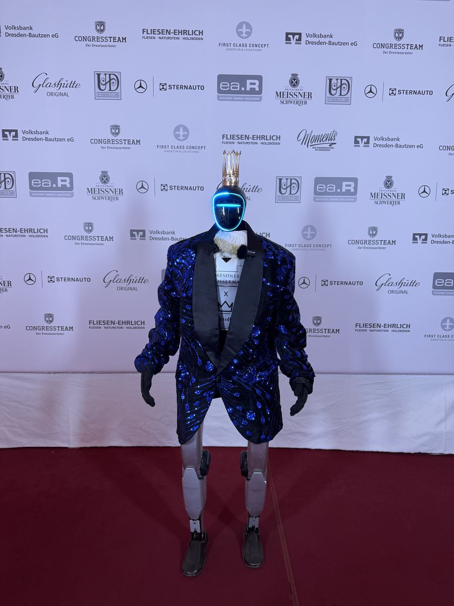
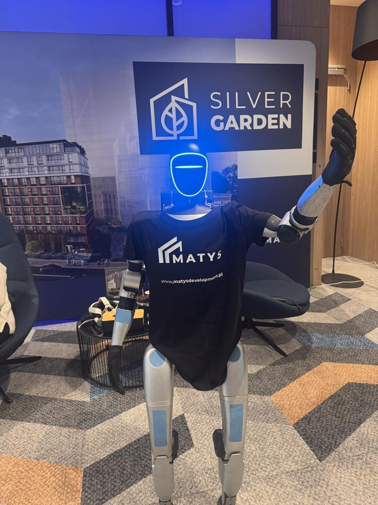

- Startseite
- Roboter für Eröffnungen
Premium-Attraktion · Unitree G1 · Anfahrt inklusive
Roboter für Eröffnungen — Unitree G1
Die Eröffnung eines Geschäfts, Büros, Showrooms oder Restaurants hat ein Ziel: Die Umgebung soll es sofort erfahren. Der humanoide Roboter ist beim Banddurchschnitt dabei, begrüßt die ersten Gäste und gibt den Lokalmedien einen Grund, über den Eröffnungstag zu berichten.

Was der Roboter am Eröffnungstag übernimmt
Eine Eröffnung hat zwei Aufgaben. Die geladenen Gäste sollen sich willkommen fühlen, und die Nachbarschaft soll merken, dass es einen neuen Ort gibt. Der Roboter arbeitet an beiden: Vor der Tür bleibt stehen, wer sonst vorbeigegangen wäre, und drinnen bekommt die Zeremonie einen Moment, den alle filmen.
Vor der Tür
Der G1 steht am Eingang, winkt, spricht Passanten an und lädt sie hinein. Auf der Brust trägt er Ihr Logo und einen QR-Code, zum Beispiel zum Eröffnungsangebot.
Beim Banddurchschnitt
Zur Zeremonie kommt er mit nach vorn. Er begrüßt die Gäste, sagt die Rednerin oder den Redner an und steht beim Durchschneiden des Bandes neben der Geschäftsführung. Für Lokalredaktionen ist das ein dankbares Motiv. Garantieren lässt sich ein Bericht nicht, aber eine Einladung mit Bild erhöht die Chance.
Den Rest des Tages
Danach wechselt der Roboter in den Alltag eines Eröffnungstags: kurze Tanzeinlagen, Fotos mit den ersten Kundinnen und Kunden und Antworten auf Fragen zu Sortiment oder Öffnungszeiten, die wir ihm vorher einspielen.
Zeitplan für einen Eröffnungstag
- Rund 1,5 Stunden vorher: Anreise, Aufbau und Testlauf auf der Fläche am Eingang.
- Zur Türöffnung: Begrüßung der ersten Gäste und der Passanten.
- Zur Zeremonie: Ansage, Banddurchschnitt, Gruppenfoto.
- Bis zum Abend: Blöcke aus Tanz, Fotos und Gesprächen, dazwischen kurze Akkuwechsel.
Planen Sie die Feier noch, hilft der Ratgeber Ideen für die Eröffnungsfeier. Verwandte Formate sind der Tag der offenen Tür und der Produktlaunch.
Roboter zur Store-Eröffnung
Eine Eröffnung hat genau einen Tag Zeit, um die Nachbarschaft zu erreichen.
Im Einzelhandel entscheidet die Eröffnungswoche über die ersten Monate. Ein Roboter komprimiert die nötige Aufmerksamkeit auf diesen einen Tag.
Passanten werden Kunden
Der Roboter arbeitet vor dem Eingang und stoppt den Fußgängerstrom. Operator und Beschilderung führen die Neugierigen hinein.
Lokale Presse kommt von selbst
Eine Eröffnung mit Roboter ist ein fertiges Thema für Lokalportale. Kündigen Sie sie mit Bild an, dann greifen sie es auf.
Für Ketten
Bei mehreren Standorten wiederholen wir das Format als Roadshow — siehe Roboter für Franchise-Systeme.
Aus echten Einsätzen

Vor dem Autohaus Gonia stand der Roboter im roten T-Shirt mit Regenschirm am Eingang. Im Fitnessclub YEAH GYM in Breslau trug er das Shirt des Clubs und begrüßte die Mitglieder im Trainingsbereich.


In Deutschland war der Roboter bei der Dresdner Schlössernacht als Gastgeber auf dem roten Teppich im Einsatz. Alle Aufnahmen stehen unter Referenzen und Videos.
Häufige Fragen
Den Eröffnungstermin kennt man meist im Voraus — reservieren Sie den Roboter 3–4 Wochen vorher, dann helfen wir auch bei der Kommunikation, die die Attraktion ankündigt. Eine Anzahlung ist dafür nicht nötig.
Ein kompletter Eröffnungstag kostet ab 2.500 €, mit Operator, Anfahrt, Branding und Haftpflichtversicherung. Soll der Roboter nur zur Zeremonie kommen, kalkulieren wir den kürzeren Auftritt individuell. Für ein Eröffnungswochenende oder mehrere Filialen gilt ab zwei Tagen ein Rabatt von 15 % auf jeden Tag.
Ja, auf ebener, trockener Fläche wie dem Gehweg oder Vorplatz. Bei Regen zieht er in den Eingangsbereich um, das planen wir vorher ein. Auf öffentlichen Flächen braucht es die Zustimmung des Flächenbetreibers; bei der Organisation helfen wir.
Ja. Logo und QR-Code auf der Brust sind im Preis enthalten, der Code kann zum Eröffnungsangebot oder zur Terminbuchung führen. Wie der Auftritt in den Farben eines Hauses aussieht, zeigt der Fitnessclub YEAH GYM: Dort trug der Roboter das Shirt des Clubs.